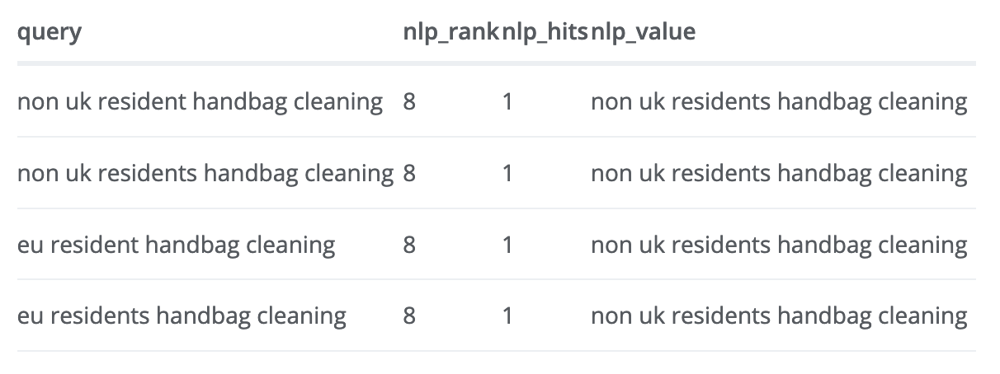

With the launch of the Google Natural Language API (NLP API), and the emphasis of machine learning that is said to account for up to 30% of the SEO algorithmn for Google search, a natural question is whether you can use Google’s own macine learning APIs to help optimise your website for search.
Whilst I don’t believe they will offer exactly the same results, I can see useful applications that include:
- Identifying what entities are on your website, to see what topics Google Knowledge Graph may categorise your website as
- Running your development website through the API to see if the topics are what you expect your SEO to cover
- Identify content that has very similar topics, that may be competing with one another in search
- Auto-optimisation of content by altering content to desired query targets
- Competitor analysis of SEO website performance
Both these data sources are available through R via searchConsoleR and googleLanguageR, so below is a workflow on using them together to help answer questions like above.
Overview
For this proof of concept we will use search console API and the NLP API to generate keywords for the same URLs, then compare the results.
The general outline is:
- Get Search Console data for a website
- For each SEO landing page, generate a corpus of NLP results
- Look for evidence that there is a relationship to a high agreement between NLP and SEO rankings
- Identify optimisation opportunities with suggested topics.
Setup
As we’re authenticating with two googleAuthR libraries, we set the scopes and authenticate directly with googleAuthR::gar_auth() rather than authenticate seperatly. The NLP API requires you to set up your own Google Cloud project, so that projects client ID, secret etc are used to generate one authentication token that covers both. See the googleAuthR website for details.
The libraries used are also below:
library(googleAuthR) # Authentication
library(googleLanguageR) # Google NLP API
library(searchConsoleR) # Webmasters API
library(tidyverse) # Data processing
library(rvest) # URL scraping
library(cld2) # Offline language detection
# set google project to your own
# assumes you have downloaded your own client ID JSON and set in environment argument GAR_CLIENT_JSON
gar_set_client(scopes = c("https://www.googleapis.com/auth/webmasters",
"https://www.googleapis.com/auth/cloud-platform"))
# creates an auth token for reuse called "scgl.oauth" that works with search console and Language API
gar_auth("scgl.oauth")Gather Search Console data
For this we need the keywords and each SEO landing page that appeared in the Google results, so the dimensions query and page are required:
library(searchConsoleR)
test_website <- "https://www.example.co.uk"
sc <- search_analytics(test_website, dimensions = c("query","page"))The NLP API supports these 10 languages, so the queries’ language also need to be on that list.
For this example, we only use English keywords so we can limit to just those by detecting the query keywords.
I suggest using the cld2 library. I use this offline library for language detection as its free and fine for quick processing, whilst if more heavy duty detection and translation needed, then I would use gl_translate() from googleLanguageR although that has a cost.
library(cld2)
sc$language <- detect_language(sc$query)Keeping the languages that are en or NA (we couldn’t tell)
sc_eng <- sc %>% filter(is.na(language) | language == "en")Now we have a clean dataset to send to the NLP API.
Gather NLP data
To avoid running NLP on lots of unnecessary HTML boiler plate, we need to consider what data we want to send in.
For example, as we’re interested in SEO, the relevant data will include the title tags and the body content. Limiting the data sent to those will mean we have cleaner data out.
There are two approaches to this:
- Examine the HTML or the website to only extract the useful bits using
rvest’s CSS selectors (needs bespoke programming for each website) - Take the text only cache from Google as the text source instead (cleaner data, but you’ll be blocked by Google if you scrape to many URLs)
For this example, we take the latter method, but if you are running this beyond proof of concept scale I would advise the first.
To take the “Text Only” cached version of a page, we use the URL that is supplied by Google Search’s cache:
e.g.
If your URL is - http://example.com/your-website
…then the text only webcache will be:
http://webcache.googleusercontent.com/search?q=cache:example.com/your-website&num=1&strip=1&vwsrc=0#/
An example function that does the above is shown below:
library(rvest)
library(tidyverse)
## create a function for scraping this website
scrape <- function(the_url){
message("Scraping ", the_url)
read <- read_html(the_url)
Sys.sleep(5) # be nice to website
read %>%
html_text() %>%
trimws()
}
scrape_googlecache <- function(the_url){
wc <- gsub("https?://","", the_url)
cache_me <- sprintf(
"http://webcache.googleusercontent.com/search?q=cache:%s&num=1&strip=1&vwsrc=0#/",
wc
)
scraped <- scrape(cache_me)
# remove whitespace and double whitespace
out <- gsub("(\r|\n|\t)"," ", scraped)
out <- gsub("\\s\\s+"," ", out)
# remove first 1000 characters of boilerplate
out <- substr(out, 1000, nchar(out))
data.frame(cached = out, url = the_url, stringsAsFactors = FALSE)
}Here is a demo of how it works on one URL:
the_url <- "https://code.markedmondson.me"
html_url <- scrape_googlecache(the_url)
substr(html_url$cached, 1000, 2000)You can now apply this function to all the unique URLs in your search console URLs using a purrr loop, but hit it too fast and you’ll be blocked.
library(tidyverse)
all_urls_scrape <- sc_eng %>%
distinct(page) %>%
select(page) %>%
map_df(scrape_googlecache)
Do the NLP API
Now we can get results from Google NLP - test this out first with a couple of URLs as it costs money for each API call.
library(tidyverse)
library(googleLanguageR)
nlp_results <- all_urls_scrape %>%
select(cached) %>%
map(gl_nlp) # this line makes the API callsThe NLP API returns lots of data, for now we are interested in the entities section:
library(tidyverse)
entities <- map(nlp_results, "entities")
## only get the types that are not "OTHER"
types <- map(entities, function(x){
y <- x[[1]]
y <- y[y$type != "OTHER",]
y <- y[!is.na(y$type),]
y
})
We now have a list of the NLP results for each URL, for all the URLs that were in the search console data.
NLP features
You can see the googleLanguageR website for more details on what is returned, as one example here is what recognised entities the API returned that have Wikipedia links:
library(tidyverse)
## only get entries that have wikipedia links
types[[1]] %>%
filter(!is.na(wikipedia_url)) %>%
distinct(name, wikipedia_url) %>%
head %>%
knitr::kable()
Comparison between Search Console and NLP
We can now compare the URL entities in types and the Search Console data in sc_eng
For demo purposes, we only look at the home page for the example website, but you can repeat this by looping over the list of types.
homepage_types <- types[[1]]
homepage_search_console <- sc_eng %>% filter(page = "https://www.example.co.uk/")page_types <- readRDS("homepage_types.rds")
page_search_console <- readRDS("homepage_search_console.rds")Data processing
We first get the NLP entity names and the search console queries into the same format, lowercase and deduplicated, and for the NLP results the salience score is how important it thinks that entity is to the page, so we’ll sort downwards from that:
library(tidyverse)
page_types <- page_types %>%
distinct(name, .keep_all = TRUE) %>%
mutate(name = tolower(name)) %>%
arrange(desc(salience))
Now the vector of entity names in page_types$name and the vector of search console queries in sc_eng$query are the two vectors of keywords we want to compare. Are they similar?
Similarity of keywords
In my example case I have 10 distinct queries from search console, and 464 unique named entites extracted out of the HTML from the NLP API, sorted by salience.
A simple way of matching strings in R is using its base function agrep() which is an implementation of Levenshtein distance AKA “fuzzy matching”. I’ll run all the queries and compare against the entities:
library(tidyverse)
## named vector
queries <- page_search_console$query %>% unique()
queries <- setNames(queries, queries)
fuzzy_ranks <- queries %>%
map(~ agrep(., page_types$name, value = FALSE)) %>%
enframe(name = "query", value = "nlp_rank") %>%
mutate(nlp_hits = map_int(nlp_rank, length)) %>%
filter(nlp_hits > 0)
fuzzy_values <- queries %>%
map(~ agrep(., page_types$name, value = TRUE)) %>%
enframe(name = "query", value = "nlp_value")
fuzzy <- left_join(fuzzy_ranks, fuzzy_values, by = "query")
Since its a one-to-many relationship (one query can match several entities on the page), a list-column created by enframe() keeps it all neat and tidy within the tidyverse style.
nlp_rankis a vector of rankings of the salience of the wordsnlp_hitsis a numeric of how many entities each query hadnlp_valueis a vector of what entities are matched
I’ve had to change a few values to protect client data, but here is an example of the output:

Does the NLP help with any insight?
A few take aways from the above in the real case, which was an e-commerce page targeting customers in Europe was:
- The NLP ranked the salience of the top keyword referrer as 8 - meaning it had 7 more entities it thought the page was more relevant to the page. This may mean we should work more on stressing the subject we want to be recognised in Google for.
- One of these was “British” which didn’t appear on the page which only mentioned “UK”, so it looks like it adds synonyms as well into its analysis.
- The NLP ranked “customers” as rank 3, even though it was mentioned only two times on the page. It got that this was an ecommerce page. Likewise it identified “European Econmic area” as important, even though it was only mentioned once. Since this was a sales page aimed at EEC users, this looks fair.
Summary
Its early days but I am starting to run through new client websites to see what comes up (by writing more custom code to parse out the content) to pass on to the SEO specialists, at the very least its another perspective to inform topic and keyword choices. If anyone takes this approach and finds it useful, do please comment as I’ll be interested if this helps. It would also be good to compare this with other non-Google NLP APIs such as on Azure and AWS to see if the Google one is especially useful for Google SEO.